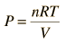

Isothermal Process
For a constant temperature process involving an ideal gas, pressure can be expressed in terms of the volume: |  |
The result of a heat engine process leading to expansion from to gives the work expression below.

Heat engine concepts
| HyperPhysics***** Thermodynamics | R Nave |